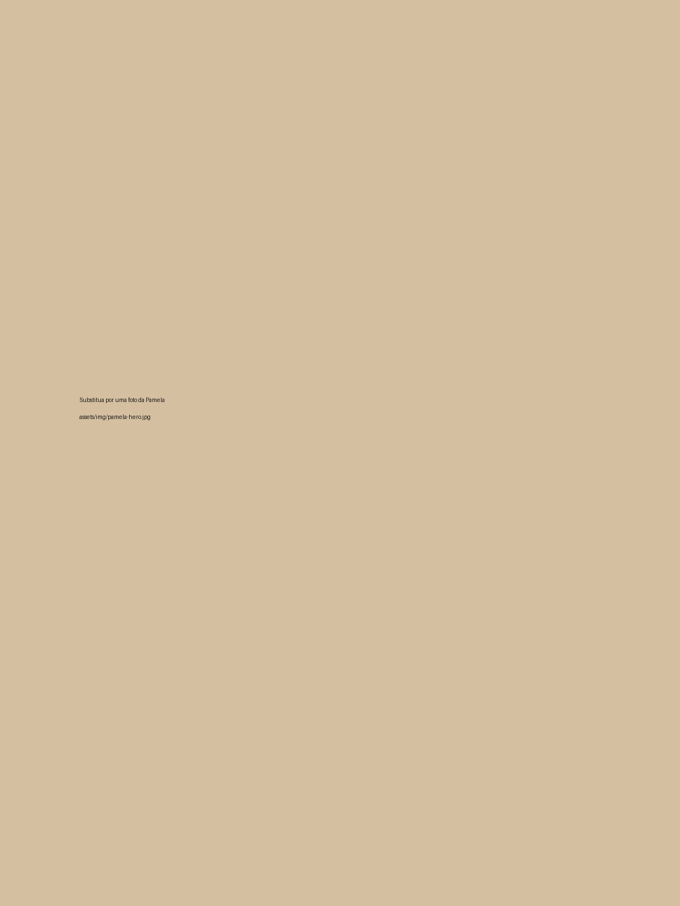

Pare de gastar dinheiro com produtos que não funcionam para sua pele.
Descubra o que sua pele realmente precisa com videoaulas de uma esteticista, uma Análise Guiada da Pele e rotinas personalizadas para acne, manchas, oleosidade, ressecamento, sensibilidade e envelhecimento.
Videoaulas • Análise Guiada • Rotinas Personalizadas • Grupo VIP

Você compra produtos, tenta fazer skincare… mas sua pele continua sem melhorar?
Você vê uma dica no TikTok. Compra um produto viral. Depois uma blogueira recomenda outro. Você testa uma rotina nova, troca os produtos, mistura ativos e, no fim, continua sem entender por que sua pele não responde.
O problema, muitas vezes, não é falta de cuidado. É tentar cuidar da pele sem saber qual é a sua principal necessidade.
Um sérum, um ativo, uma rotina ou um produto que está todo mundo usando.
Porque funcionou para outra pessoa, mas ninguém avaliou a necessidade da sua pele.
Ou sente oleosidade, acne, ressecamento, irritação ou manchas continuarem aparecendo.
E segue gastando dinheiro com produtos que talvez nem sejam adequados para você.
Sua pele não precisa de mais achismos. Ela precisa de direção.
A internet entrega milhares de dicas, mas quase nunca considera o seu contexto: sua queixa principal, sua rotina, seus erros, sua sensibilidade e o comportamento da sua pele.
Foi por isso que o Método Pele Bonita Sem Segredos foi estruturado como uma experiência guiada: primeiro você entende sua principal dor, depois segue o cuidado mais indicado.
Ver como funcionaUma esteticista te guiando para parar de escolher no escuro.
Como esteticista, Pamela Santos atende mulheres que já gastaram dinheiro com produtos, seguiram dicas da internet e mesmo assim continuaram insatisfeitas com a pele.
Dentro do método, ela te conduz por videoaulas, uma Análise Guiada da Pele e planos específicos para que você saiba por onde começar e qual rotina seguir.
Videoaulas + Análise Guiada + rotinas personalizadas para sua principal queixa.
Você não fica perdida em um curso genérico. Você entende sua queixa e recebe orientação clara sobre qual tratamento seguir.
Assista às boas-vindas
Pamela explica por que produtos da moda podem não funcionar para você e como usar o método do jeito certo.
Faça sua Análise Guiada da Pele
Responda perguntas simples para identificar sua principal dor: acne, manchas, oleosidade, pele sensível, linhas de expressão ou cicatriz.
Receba sua rotina personalizada
Ao final da análise, você recebe uma orientação objetiva: qual vídeo assistir primeiro e qual rotina começar.
Siga o plano de 7 dias
Você acessa vídeos, rotina recomendada, produtos/categorias indicadas, cuidados a evitar e próximos passos.
Mulheres que confiaram no cuidado profissional da Pamela.
Elas também já tentaram seguir dicas da internet. Hoje cuidam da pele com muito mais segurança e clareza.
Quando existe orientação correta, o cuidado fica mais inteligente.
Antes de comprar mais um produto da moda, veja a diferença que uma rotina adequada e procedimentos bem indicados podem fazer.
Resultados construídos a partir de avaliação adequada, escolha correta dos cuidados e acompanhamento profissional.
Cada pele possui características únicas. Quando os cuidados são escolhidos corretamente, os resultados tendem a aparecer com mais consistência.
Entender sua pele antes de comprar produtos ou iniciar tratamentos evita desperdícios, reduz frustrações e aumenta suas chances de evoluir.
Resultados variam de pessoa para pessoa conforme tipo de pele, rotina, constância e necessidade individual. O conteúdo é educativo e não substitui avaliação profissional individualizada.
Cuidados específicos para cada necessidade da sua pele.
Após fazer sua Análise Guiada da Pele, você saberá qual cuidado faz mais sentido para o seu momento. Além disso, terá acesso a toda a biblioteca de conteúdos para consultar sempre que precisar.
Cuidados para Acne
Aprenda quais hábitos, produtos e cuidados podem ajudar a controlar a acne, reduzir inflamações e evitar erros que costumam agravar o problema.
Cuidados para Oleosidade
Entenda como controlar a oleosidade sem agredir a pele, evitando o efeito rebote e mantendo uma rotina equilibrada.
Cuidados para Manchas
Descubra os cuidados mais indicados para uniformizar o tom da pele, prevenir novas manchas e potencializar seus resultados.
Cuidados para Pele Sensível
Aprenda a fortalecer a barreira da pele, reduzir irritações e montar uma rotina suave e segura para peles sensíveis.
Cuidados para Linhas de expressão
Conheça os cuidados diários que ajudam a preservar a firmeza, melhorar a textura da pele e retardar os sinais do envelhecimento.
Cuidados para Cicatriz
Entenda quais tratamentos, ativos e procedimentos podem auxiliar na melhora da textura da pele e da aparência das cicatrizes.
Uma experiência guiada, não apenas um curso de skincare.
Conteúdo direto para você entender sua pele, escolher melhor e seguir uma rotina mais adequada.
Aulas para entender por que sua pele não melhora e como usar o método.
Questionário para identificar sua principal dor e orientar sua rotina recomendada.
Acne, oleosidade, manchas, pele sensível, linhas de expressão e cicatriz.
Rotina prática para começar a cuidar da pele com mais direção.
Dicas, novidades, conteúdos extras e orientações gerais.
Antes de comprar outro produto para sua pele, descubra qual rotina faz sentido para você.
Chega de gastar no escuro. Acesse o método, faça sua Análise Guiada da Pele e descubra a rotina de skincare mais adequada para o seu momento.
Método Pele Bonita Sem Segredos
Pagamento seguro • Acesso imediato após aprovação
Experimente sem medo.
O único risco real é continuar comprando produtos errados sem saber o que sua pele realmente precisa.
Se não gostar do método, devolvemos 100% do seu dinheiro em até 7 dias. Sem perguntas. Sem burocracia.Pare de adivinhar o que sua pele precisa.
Acesse videoaulas, faça sua análise guiada e siga a rotina recomendada para começar uma rotina com mais clareza.
Ver oferta de lançamentoPerguntas frequentes
Esse método substitui uma consulta profissional?
Não. O método é educativo e oferece uma análise guiada para orientar seus próximos passos, mas não substitui avaliação individualizada feita por profissional habilitada.
Vou ter acesso apenas à rotina indicada para mim?
Não. A Análise Guiada da Pele vai te ajudar a identificar por onde começar, mas você terá acesso vitalício à biblioteca completa de cuidados para consultar sempre que sua pele tiver uma nova necessidade.
Preciso comprar produtos caros?
Não. A proposta é evitar compras sem direção. O método te ajuda a entender sua dor principal antes de gastar com produtos.
O acesso é imediato?
Sim. Após a aprovação do pagamento, você recebe acesso pela nossa plataforma de conteúdo.
Tem garantia?
Sim. Você tem 7 dias de garantia incondicional. Se não gostar, devolvemos seu dinheiro.